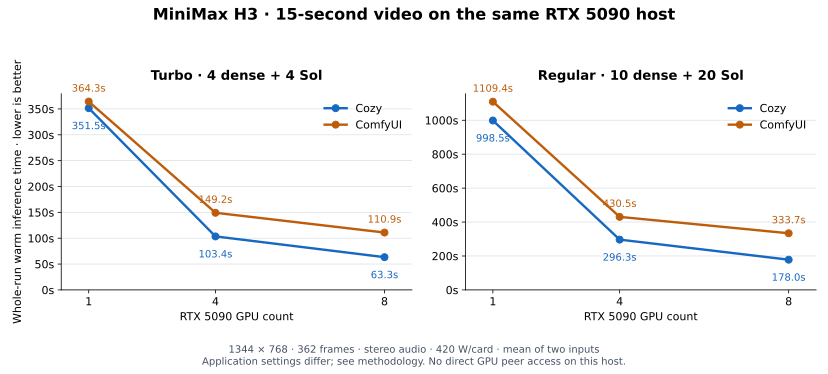

Cozy Creator
—Loading clip details…
Clip details & SHA-256
- Text encoder
- —
- SHA-256
—
MiniMax H3 · Measured
Cozy Creator versus ComfyUI, from one GPU to eight. Same submitted scenes, same seeds, full 15-second video—with the original clips here to compare.
01 / The measurements
Turbo uses 4 dense + 4 Sol steps. Regular uses 10 dense + 20 Sol steps. Both engines keep protected blocks and the conditioning prefix dense during sparse steps.
| Hardware | Mode | Cozy Creator | ComfyUI | Less time |
|---|---|---|---|---|
| 1 × RTX 5090 | Turbo | 5m 51.5s | 6m 04.3s | 3.5% |
| 1 × RTX 5090 | Regular | 16m 38.5s | 18m 29.4s | 10.0% |
| 4 × RTX 5090 | Turbo | 1m 43.4s | 2m 29.2s | 30.6% |
| 4 × RTX 5090 | Regular | 4m 56.3s | 7m 10.5s | 31.2% |
| 8 × RTX 5090 | Turbo | 1m 03.3s | 1m 50.9s | 42.9% |
| 8 × RTX 5090 | Regular | 2m 58.0s | 5m 33.7s | 46.7% |
| 4 × H100 SXM 80 GB | Turbo | 55.5s | 2m 01.9s | 54.4% |
| 4 × H100 SXM 80 GB | Regular | 2m 34.3s | 5m 53.8s | 56.4% |
Each mean uses two timed inputs after a warmup. “Less time” is (ComfyUI − Cozy) / ComfyUI. Two samples are observations, not a confidence interval. This compares the tested applications and settings, not identical arithmetic or every possible ComfyUI configuration.
02 / See the original outputs
Choose a GPU configuration and one of the two inputs. These are the original, untranscoded Turbo clips. Compare motion, detail and audio for yourself; timing results alone do not establish equal quality.
The two inputs are samples of the same benchmark.
Clip times below are individual runs.
Loading clip details…
—Loading clip details…
—Loading comparison data…
Submitted scene descriptions and seeds match. Cozy adds its default non_diegetic_music: N/A field; text-encoder precision also differs. Identical conditioning or pixels are not claimed.
03 / One host, three GPU counts
On the same eight-card RTX 5090 host, we selected GPU 0, GPUs 0–3, or all eight. Cozy’s Turbo time fell from 351.5 to 63.3 seconds: a 5.56× speedup. ComfyUI improved from 364.3 to 110.9 seconds, or 3.28×.
Doubling from four to eight GPUs improved Cozy by 1.63× for Turbo and 1.66× for regular, versus 1.35× and 1.29× for ComfyUI. The advantage also appears within denoising; it does not come entirely from saving the video.

04 / Where the time goes
Cozy uses SageAttention3 NVFP4 for dense attention on RTX 5090, then Kitchen INT8 Sol for sparse attention. On H100, it uses the Hopper Sage INT8 QK / FP8 PV dense implementation and BF16 CuTe Sol. The tested ComfyUI workflow explicitly selects Kitchen INT8 dense and Sol with the matched step schedule; these are benchmark settings, not universal ComfyUI defaults.
FP8 model weights do not determine attention arithmetic. The single-GPU Cozy path shares quantized QKV input and can reuse the previous sparse step’s key mean and value scale. The multi-GPU path materializes Q/K/V for redistribution, then uses current-call statistics on its owned heads. This is not one identical attention kernel replicated at every GPU count.
Denoising includes projections and feed-forward layers as well as attention. Earlier traces found different FP8/BF16 linear paths, and the pinned MultiStream plugin dequantizes sliced QKV projections to BF16.
Cozy also restores fused normalization, modulation, residual and SwiGLU work, avoids repeated activation quantization where possible, and reuses LoRA preparation data. LoRA support stays enabled—Turbo itself uses the PDD8 adapter. These observations do not assign the whole speedup to a single optimization.
MultiStream gathers normalized tokens before projecting each rank’s heads. Its source-checked logs report 218.7 → 446.6 GiB of aggregate logical activation sends per step from four to eight GPUs. Per GPU, that stays nearly flat at 54.7 → 55.8 GiB.
Cozy exchanges Q/K/V and attention outputs between token and head partitions. For fixed tensors, its source implies 17% more aggregate payload but 42% less per GPU when doubling the group. Logical payload is not measured PCIe traffic, and communication alone does not explain the latency gap.
Both applications distribute video VAE work across selected GPUs. Cozy splits this workload into 21 temporal clips and streams encoding while clips decode. Its Turbo video-decode stage fell from 14.98 to 8.48 seconds from four to eight RTX 5090s.
Encoding policies also differ: Cozy uses x264 CRF17 with veryfast; ComfyUI uses CRF18 with no preset override, producing settings consistent with medium. Whole-run results include that difference; they are not GPU-kernel-only measurements.
05 / A controlled communication comparison
On a separate four-H100 host with NVLink, we kept the model, kernels, prompts, seeds and eight Turbo steps fixed within each application, then compared direct transfers with staging through host RAM.
| Engine / phase | Direct GPU | Host RAM | Less time |
|---|---|---|---|
| Cozy · complete inference | 55.802s | 66.963s | 16.7% |
| Cozy · denoising | 45.607s | 56.743s | 19.6% |
| ComfyUI · complete inference | 125.576s | 140.771s | 10.8% |
| ComfyUI · denoising | 96.867s | 109.271s | 11.4% |
Native NCCL logs proved all 12 directed routes. Physical counters recorded zero NVLink payload in the RAM-staged denoising windows; direct-transfer windows recorded about 1.88 TB of transmitted NVLink payload per video across all four GPUs. Observed averages were 37.6 and 40.9 GB/s across denoising windows, including computation between transfers—not peak link bandwidth.
Counters were sampled every two seconds, so their brackets can include adjacent work. Cozy’s transport switch affects group traffic including VAE results; ComfyUI’s affects DiT activation exchanges. Compare the change within each application. This separate H100 study must not be mixed into the earlier H100 baseline means.
Cozy’s decoded video frames were byte-identical across its two transport arms for both timed inputs; decoded audio differed. ComfyUI’s decoded video and audio were not byte-identical. These observations do not establish a universal quality outcome. Direct PCIe peer access can work without NVLink when hardware and drivers support it, but all directed peer checks on this RTX 5090 host were unavailable.
06 / Methodology & limits
Warm worker generation includes conditioning, denoising, audio/video decoding and saving. Initial setup, model downloads, compilation, queueing and subsequent client transfer are excluded. Each cell uses one warmup and two timed scene inputs; every timed request recomputes conditioning and sampling. Two samples do not provide a confidence interval. All accepted clips passed full decode, frame, geometry, GPU-count, step-count and hash checks.
H3 source is 1.27.0, with TensorFS 0.6.1. Native four/eight-GPU runs use Runtime 0.22.0; later single-GPU runs use 0.23.1. Relevant inference source, the compiled kernel extension and non-SDK dependencies match; the worker executable changed. This is disclosed cross-version application scaling, not an identical whole-worker binary comparison.
ComfyUI is v0.39.0, the latest release checked for this campaign, with Kitchen 0.2.37, PyTorch 2.14.0 / CUDA 13.0 and cuBLAS 13.2.0.9. MultiStream and PDD plugin revisions are pinned in the data file. Comfy starts a fresh server per mode and GPU count. Native regular runs retain idle Turbo contexts. The clean Comfy transport arms use Runtime 0.23.1 as background worker software and a separately pinned Comfy environment.
RTX 5090 tests share one eight-card host and a 420 W limit per card. Equal power limits do not mean identical clocks. During denoising, Cozy/Comfy averaged 2170/1812 MHz for Turbo and 2012/1770 MHz for regular, around 66–67°C. Workload and boost behavior can differ; GPU throttle-reason flags were not recorded. Four cards stay within one NUMA node; eight span two. H100 tests use four SXM 80 GB cards at 700 W. No two-GPU or eight-H100 result is claimed.
Cozy uses FP8-rowwise text-encoder weights. Comfy’s official text checkpoint stores BF16, while its loader reports FP16. Cozy also appends a blank line and non_diegetic_music: N/A to the same submitted scene description. Noise packing and attention arithmetic can differ; identical conditioned text or pixels across applications are not claimed. The encoder policies differ as described above.
These new FP8-text-encoder and multi-GPU clips still require human quality assessment. Approval of earlier single-GPU hybrid outputs does not automatically cover them. The 16 public videos are the original Turbo outputs; regular generation was also timed, but those clips are not part of this selection.
Runs affected by worker updates were excluded and replaced. One single-GPU Comfy regular replacement used a stock string-identity node to force fresh conditioning and sampling while retaining loader caches; prompt bytes and all 30 steps were unchanged. A cached-conditioning warmup, a refused request and a VRAM-cache experiment with zero resident cached blocks were also excluded.
This is a matched-schedule Comfy workflow, not its untouched defaults or a claim to have found its fastest possible configuration. The sparse node defaults to tau 1.3 and start_percent 0.2, which gives 2 dense + 6 sparse steps on this PDD8 schedule. We explicitly used tau 1.0 and a boundary giving 4 dense + 4 sparse for both engines. The H100 kernel choices were established qualified settings; this study did not exhaustively compare every H100 attention kernel. Earlier cohorts used different power limits, software or linear-layer paths and are not spliced into this scaling curve. Eight-GPU execution here used captured local packages; it does not claim that an automatic GPU-selection ladder chooses eight.
Upstream references: ComfyUI · H3 MultiStream · CUDA peer access · NCCL transport controls